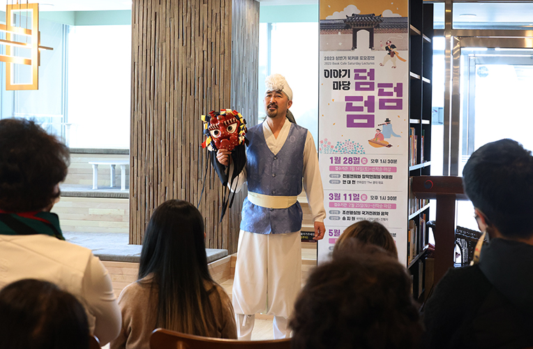

2023 상반기 토요강연 이야기마당 <덤덤덤>
- 대상
- 누구나
- 강사
- 일시/장소
- 1.28.(토), 3.11.(토), 5.18(목) 오후 1시 30분 2층 북카페
- 수강료
- 무료
명사초청 강연으로 공연의 즐거움이 덤!덤!덤!
강연과 공연을 결합한 인문학 강연으로 일반적인 강의에서 벗어나 새로운 시각에서 공연을 느낄 수 있도록 마련한 문화향유프로그램. 공연 내면의 이야기를 일반인들의 눈높이에 맞춘 강연으로 바쁜 일상을 살아가고 있는 현대인들에게 예술을 통한 힐링의 시간을 가질 수 있기를 기대한다.
세부프로그램
1월 강연 <굿(GOOD)이로구나!> 공연과 연계된 강연으로 '연희집단 The 광대' 안대천 대표가 '전통연희와 창작연희의 어울림'을 주제로 진행 3월 강연 2023 기악단 정기연주 '정악의 멋'공연과 연계된 강연으로 국악방송 <국악산책> 진행자인 송지원(음악인문연구소) 소장이 '조선왕실의 국가전례와 음악'을 주제로 진행 5월 강연 무장애 공연 소리극<옥이>공연과 연계된 강연으로 김지원 연출가가 '무장애는 없다'는 주제로 진행
* 교육내용과 일정은 사정에 따라 변경 될 수 있습니다.
